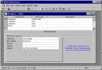
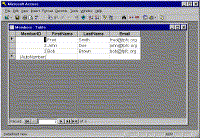
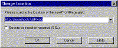
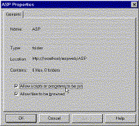
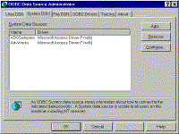
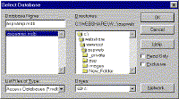
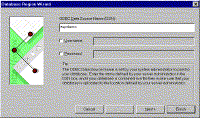
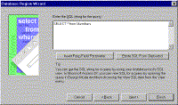
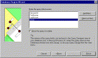
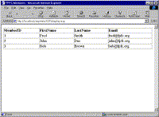

|
| ||
|
| ||
Brought to you by Inside Microsoft FrontPage, a ZD Journals publication. Click here for a free issue  .
.
FrontPage is a strong Web development tool. But, it becomes even stronger when you use it in conjunction with other members of the Microsoft Office family.
In the article "Publishing Access 97 Data Using FrontPage," we showed you how to display static Access data in a FrontPage-based Web. In this article, we'll show you an even more powerful technique: using Active Server Pages (ASP) technology to dynamically display data.
The advantage to dynamic display is that each time a user loads the page that includes Access data, the most current version of the data will display. Also, as you'll see in a future article, ASP lets users post to the database, which can greatly increase your site's interactivity.
For now, we'll concentrate on displaying data. Before we do that, however, we need to look at exactly what ASP is.
Active Server Pages is a method for creating programs that run on a Web server. An ASP page is an HTML document that contains embedded server-side scripting -- in other words, scripting that runs on the server, not on the client machine. With server-side scripting, the user sees the results of the script, not the script itself. Also, the user's browser doesn't have to be able to interpret the scripting language.
You save an ASP file with an .asp extension instead of an .htm extension. As you'll see, you must save ASP pages in a special executable folder on the server.
To use ASP with FrontPage 98, you must have several components installed: the FrontPage 98 Server Extensions, a 32-bit ODBC (Open Database Connectivity) driver, an ASP-compatible server, and an ASP engine on the server. ASP-compatible servers include:
In this article, we'll assume that
you're using one of these Web servers and that you already have the FrontPage
extensions and the 32-bit ODBC driver installed. To install the ASP engine, insert your
FrontPage 98 CD-ROM. Click the Start button and choose Run . . .. then, type D:\60
Minute Intranet Kit\60 Minute Intranet Kit\modules\asp.exe (where D is the letter of
your CD-ROM drive). Click OK to launch asp.exe. When you do, the install wizard will
appear. You can accept all the default values in the wizard. (Note: You can also download
asp.exe from www.microsoft.com/msdownload/iis3/Download2.asp?Prod=1  .)
.)
You must also set up a Database Region. This is a FrontPage component that displays database information on a Web page. We'll walk through those steps shortly. First, we need a database to work with.
For this article, we'll create a simple database of the members of the fictitious FrontPage Fan Club (FPFC). The database will only have a few dummy members and four fields: MemberID, FirstName, LastName, and Email.
Launch Access 97 and create a new, blank database. When the File New Database dialog box appears, type aspsamp, and then click Create. (Remember where you saved the database file.)
In the Database window, click the New button to open the New Table dialog box. Double-click on Design View, and then set up your database as shown in Figure A. Notice that MemberID is a primary key field. Table A shows the important properties of each field.

Click image to enlargeFigure A. Create this sample database table in Access
Table A: Members table field properties
| Field Name | Data Type | Field Size | Other |
|---|---|---|---|
| MemberID | AutoNumber | Long Integer | Primary Key |
| FirstName | Text | 20 | |
| LastName | Text | 20 | |
| MemberID | Text | 60 |
Now, choose View | Datasheet View and enter the records shown in Figure B. When you're done, save the table as Members, and then exit Access.

Click image to enlargeFigure B. Add these dummy records to the Access database
Next, we can begin building the FrontPage web. Launch FrontPage Explorer. then, in the Getting Started dialog box, check the Create A New FrontPage Web option button. Click OK to continue.
In the New FrontPage Web dialog box, choose One Page Web. Click the Change... button to open the dialog box shown in Figure C.

Click image to enlargeFigure C. Specify the location of your new web in this dialog box
Type http://localhost/ASPweb and click OK. Then, type ASPweb and click OK again.
The first thing you need to do to your new web is to import the database. Choose File | Import . . . and then click the Add File... button. Navigate to where you saved aspsamp.mdb (the Access database). Now, select it and click Open. Click OK to import the file.
Next, you must create the executable folder we mentioned earlier, which will hold the ASP file. Click the Folders button on the View bar to switch to Folders view. Then, choose File | New | Folder. Name the new folder ASP.
To make the folder executable, right-click on it and choose context | Properties . . .. Check the Allow Scripts Or Programs To Be Run check box, as Figure D shows.

Click image to enlargeFigure D. Changing the Properties dialog box makes the ASP folder executable
Now, you must create a system Data Source Name (DSN). A DSN provides a connection between the database and the ASP page. It identifies the name of the database and the type of database driver (Access, in this case).
To create the DSN, open the Control Panel folder and double-click on the 32bit ODBC icon. Click the System DSN tab to switch to the page shown in Figure E.

Click image to enlargeFigure E. Set up your system DSN in the 32bit ODBC control panel
Click the Add... button to create a new system DSN. In the Create New Data Source dialog box that appears, choose Microsoft Access Driver (*.mdb) and click Finish. Now, in the Data Source Name field, type aspdemo. (Note that this name shouldn't contain any spaces.)
The final step in creating the DSN is to identify the source database. Click Select . . . and navigate to the imported copy of aspsamp.mdb (not to the original copy of the database). If you're using Microsoft Personal Web Server, the default location is C:\Webshare\Wwwroot\Aspweb\Aspsamp.mdb, as Figure F shows. If you're using IIS or Peer Web Services, the file will be located at C:\InetPub\Wwwroot\Aspweb\Aspsamp.mdb. Click OK to select the database file. then, click OK twice more to complete the naming process.

Click image to enlargeFigure F. Navigate to the imported copy of the database
Now, return to FrontPage Explorer and choose Tools | Show FrontPage Editor. When the editor launches, a new, blank page will appear.
It's time to insert the Database Region component. And, fortunately, FrontPage includes a wizard that will do the hard work for you. To start the process, choose Insert | Database | Database Region Wizard.
On the wizard page shown in Figure G, type aspdemo. (This is the same name we entered when we created the system DSN.) Click Next to continue.

Click image to enlargeFigure G. Enter the DSN name to enable the connection to the database
The next wizard page asks you to enter a SQL string for the query. SQL, or Structured Query Language, is a standard language for database commands. Using SQL, you can query the database for any subset of records you wish.
For our example, we'll select all the records from the Members table. So, type SELECT * from Members, as Figure H shows. Then, click Next again.

Click image to enlargeFigure H. You enter a SQL query here to specify which records should be returned
On the third page of the wizard, click the Add Field... button. In the Add Field dialog box that appears, type MemberID, and then click OK. Repeat this procedure with the other three fields: FirstName, LastName, and Email. When you're done, the wizard page should look like Figure I. Click Finish.

Click image to enlargeFigure I. Enter the field names you want to display
You'll see a dialog box reminding you that this ASP page must be saved in an executable folder; click OK.
Choose File | Save, and then open the ASP folder you created earlier. Type display.asp in the URL field and FPFC Members in the Title field. Click OK, and then click the Preview in Browser button to see the results of your work.
As Figure J shows, the complete membership roster of the FrontPage Fan Club will appear in the browser.

Click image to enlargeFigure J. The ASP page displays the Access data in table form
To see the advantage of dynamic publishing, go back to Access and open the copy of aspsamp.mdb that you imported into your web (not the copy you originally saved). Add a new record to the Members table and close the database.
Now, return to your browser and click the Refresh button. When you do, the ASP script will re-query the database and display the new record.
In this article, we walked step by step through the process of displaying Access data dynamically on a Web page. In a future article, we'll show you how you can add records to the database from a Web page form.
Copyright © 1998 ZD Journals, a division of Ziff-Davis Inc. ZD Journals and the ZD Journals logo are trademarks of Ziff-Davis Inc. All rights reserved. Reproduction in whole or in part in any form or medium without express written permission of Ziff-Davis is prohibited.
Did you find this material useful? Gripes? Compliments? Suggestions for other articles? Write us!
© 1999 Microsoft Corporation. All rights reserved. Terms of use.